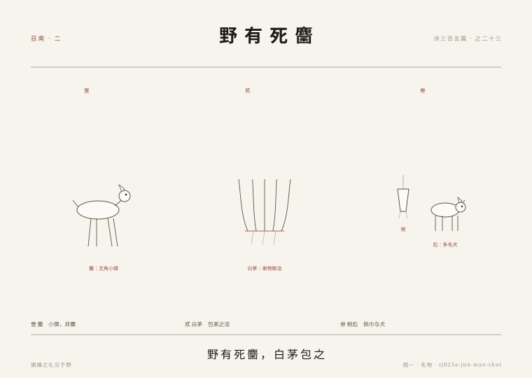
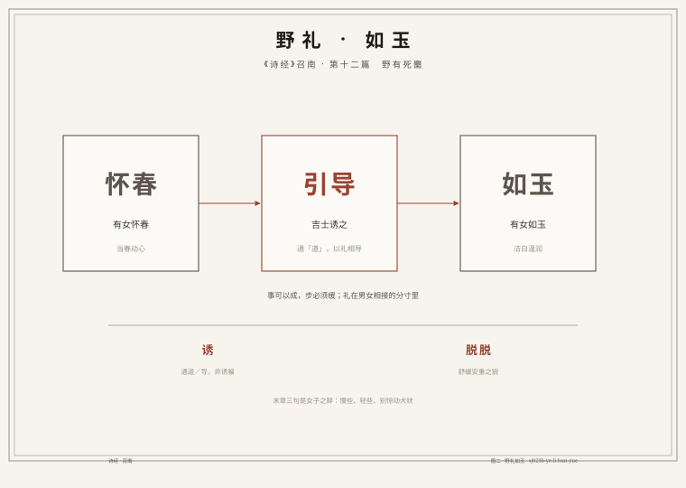

第二十三篇 野有死麕
召南 · 之二 SJ023
朗读 · 普通话
依经文正文朗读，句读从文；不配乐、不改速、不加拖腔。全库同一音色（豆包 TTS），非播音员录制。
一 解题
诗三判：
- 谁在说：前两章是一个旁观者，看野地的猎获与白茅；末章忽然换成女子的口吻，轻声叮嘱。
- 说什么事：林野之间，死麕、死鹿都用白茅包束；怀春之女如玉，吉士以礼引导她。末章三句：慢些、别动我的佩巾、别惹狗叫。
- 为何编在此：召南写婚嫁之备，此篇写婚媾之礼见于山野。白茅、朴樕、帨、尨，全是野地器物；而礼数一点不缺——礼不必在庙堂，也在男女相接的分寸里。
《毛序》：「《野有死麕》，恶无礼也。天下大乱，强暴相陵，遂成淫风；被文王之化，虽当乱世，犹恶无礼也。」——读作刺无礼、美能守礼。
朱子《诗集传》：「林野之中，有死麕死鹿，而以白茅包之；女子怀春，而吉士誘之。」——朱子只据实文，说女子之怀春与吉士之相就，未立美刺。
本库的看法：骨在婚媾之礼见于野。
白茅包兽是纳礼之象，朴樕、纯束是聘物之备；末章三句是女子之辞，慢而舒，止而不迫。全篇的分寸全在「脫脫」与「无」字上：亲事可以成，动作必须缓。「诱」通「道／导」，是引导，不是诱骗。
二 经文
第一章
野有死麕，白茅包之。有女懷春，吉士誘之。
第二章
林有樸樕，野有死鹿。白茅純束，有女如玉。
第三章
舒而脫脫兮，無感我帨兮，無使尨也吠。
分章：毛传、朱子皆三章，前二章章四句，末章章三句。前两章平铺物与礼，句式整齐；第三章忽变短章叠叹，口吻由旁观转为女子当面叮咛。形式一转，说话人就换了。
## 三 韵读
| 一 |
麕、春 |
文部 |
| 二 |
樕、鹿、束、玉 |
屋部 |
| 三 |
脫、帨、吠 |
月部 |
一章文部宽缓，二章屋部短促入声，像捆束的动作；末章月部轻声收住，「脫脫兮」「帨兮」「吠」三叹是落脚声——女子的话一句比一句轻。
四 字义与名物
- 麕（jūn）——獐，鹿类而无角。不是「麋」（四不像），是小獐。
- 白茅——茅草，洁白，古人束物、垫物用之，取其洁。
- 怀春——女子当春而动心。春，男女相感之时。
- 吉士——好男子，善士。不是「吉祥之士」，是美称。
- 诱——通「道／导」，引导、招致。不是诱骗、引诱；在此是以礼相引导。
- 朴樕（pú sù）——丛生小木，灌木。
- 纯束（tún shù）——捆束。纯，通「屯」，束也。
- 如玉——比女子之洁白温润。
- 舒——舒缓。脫脫（duì
duì）——舒缓貌、安重貌。
- 感（hàn）——通「撼」，动。不是「感动」。
- 帨（shuì）——佩巾，女子随身所系。
- 尨（máng）——多毛的狗，一说犬之杂色者。
五 今译
第一章
野地里有死獐，用白茅包起来。有女子春心初动，好男子以礼引导她。
第二章
林子里有丛木，野地里有死鹿。用白茅捆束起来，那女子洁白如玉。
第三章
慢一些，从容一些啊；别牵动我的佩巾啊；别惹得那长毛狗叫起来啊。
译注：「诱」译「以礼引导」，不取诱骗义；「感」译「牵动」，通「撼」；「尨」译「长毛狗」，不泛作「狗」。末章三句皆女子口吻，语气是劝阻，不是拒绝。
六 章旨
一章：包麕以茅。猎得死麕，白茅包之；物洁而后及于怀春之女。
二章：束鹿如玉。朴樕、死鹿、纯束，聘物愈备；女子以玉为比。
三章：女子之辞。舒、脱、无感、无吠——婚事将成，而步步要缓、要静、要不惊动。
前两章是「备」：物一层包一层，礼一道接一道；末章是「度」：人已经近了，分寸还不能乱。全篇由物及人，由男及女。
七 诗教
- 赋：直陈野地猎获与相接之事，白茅、死鹿、帨、尨皆实写，是赋。
- 观：可观一「礼」。野合之近，仍以白茅、纯束为节；末章叮咛，正是礼在男女之间的样子。
- 群：吉士与女子之外，尚有林、有鹿、有犬；一事连着一方野地的群物。
- 怨：无怨。末章虽有「无」字三叠，是劝止而非怨怼；全篇没有刺谁。
八 分寸与边界
- 不可把「诱」解作诱骗、勾引。此字通「道／导」，是以礼引导；解成诱骗，末章的劝阻就变成了防贼，全篇皆反。
- 不可把麕当作麋。麕是无角小獐；麋是大鹿，物类不同。
- 不可把「感」解作感动、感情。它通「撼」，是动手牵动佩巾。
- 不可把末章读作女子拒绝男子。三句是「慢些、轻些、别出声」，是约之以度，不是闭门之辞。
- 不可把此篇读成「淫风」的标本或反面教材。《毛序》「恶无礼」是汉人的美刺框架；诗里礼意自见，不必再加道德罪名。
九 存疑
- 全篇说话人：末章确为女子之辞；前两章是吉士自述、旁观者还是女子追述，旧说不一。本库取旁观起、女子收。
- 「诱」之训：引导说（通道）与引诱说两存。本库从引导，因末章礼意甚明。
- 死麕死鹿之用：一说为纳聘之礼（鹿皮、茅束为贽），一说只是野地起兴。本库取聘礼之象。
- 「尨」之品种：一说长毛犬，一说杂色犬，一说看门小犬。本库取「多毛之犬」。
- 编次与风教：毛序以为当乱世而恶无礼；是否实指某时某地，无证，本库不考。
十 跨典
- 《召南·鹊巢》——同卷婚诗。彼以百两之礼写盛，此以白茅純束写野；礼同而地异。
- 《邶风·静女》「静女其姝，俟我于城隅」——同是男女相接，彼于城隅，此于林野；皆有分寸之辞。
- 《仪礼·士昏礼》「束帛俪皮」——白茅純束、死鹿为贽，与古礼以鹿皮为聘相通。
- 《礼记·曲礼上》「男女非有行媒，不相知名」——末章「無感我帨」之防，正是礼之别嫌。
- 《周易·屯》「匪寇婚媾」——野地男女而必以礼，与「婚媾非寇」之义可相参。
十一 双卡与图
双卡五对：
| 麕（小獐） |
鹿（死鹿） |
| 白茅（包） |
纯束（捆） |
| 怀春 |
如玉 |
| 诱导（道） |
诱骗（误训） |
| 脫脫（舒缓） |
尨（吠犬） |

图一 · 麕·白茅·帨犬 名物图

图二 · 野礼·如玉 义理图
读图三处：
- 麕画小獐，不作大鹿：小而无角，身形轻巧；与第二章死鹿大小分出两物。
- 白茅是细长茅草：叶尖而白，束物时环绕数匝；画成阔叶草就不是白茅。
- 帨是腰间佩巾，尨在脚边：巾系于身侧，犬在树下；末章「無使尨吠」，图上犬只作欲起之状，不画成猛犬。